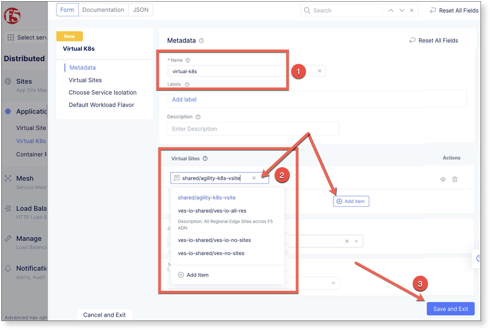
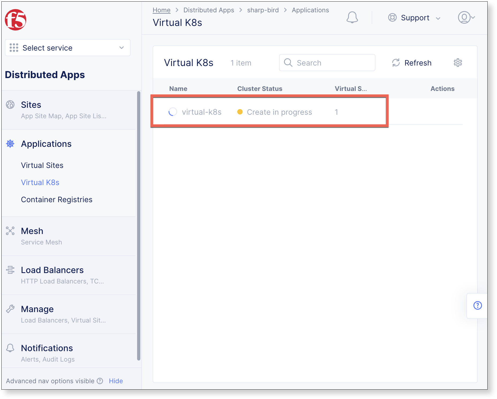
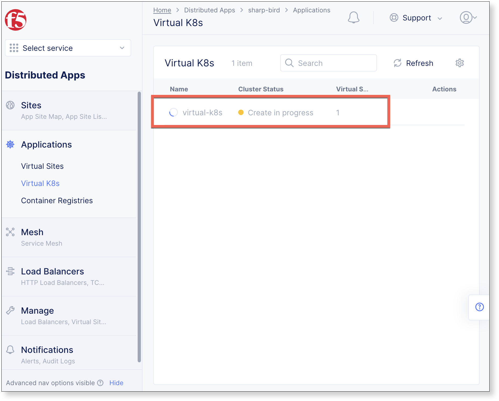
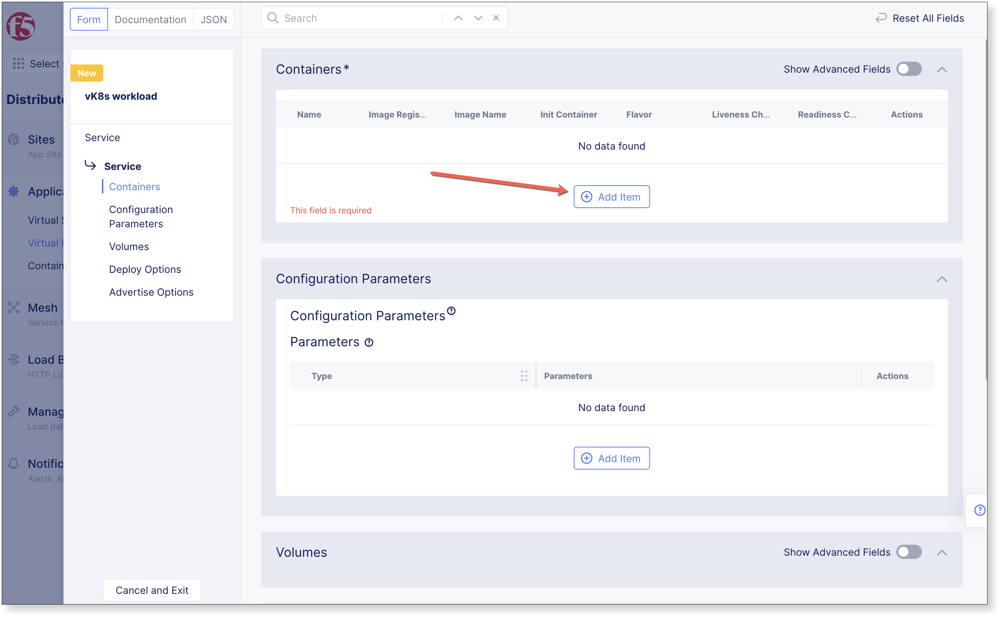
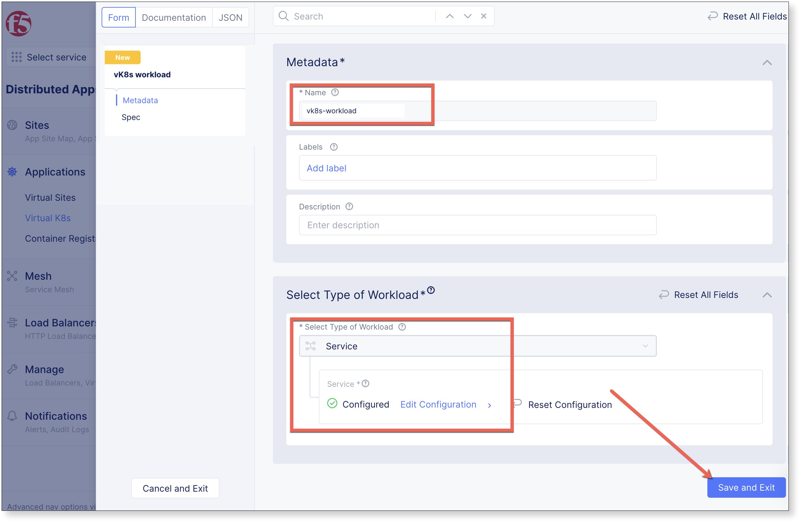
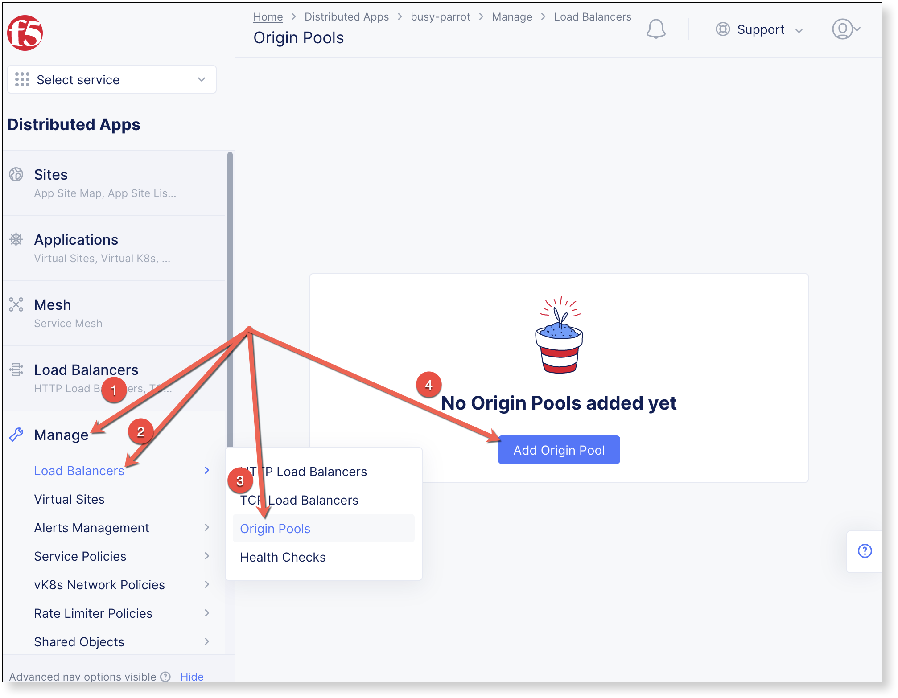
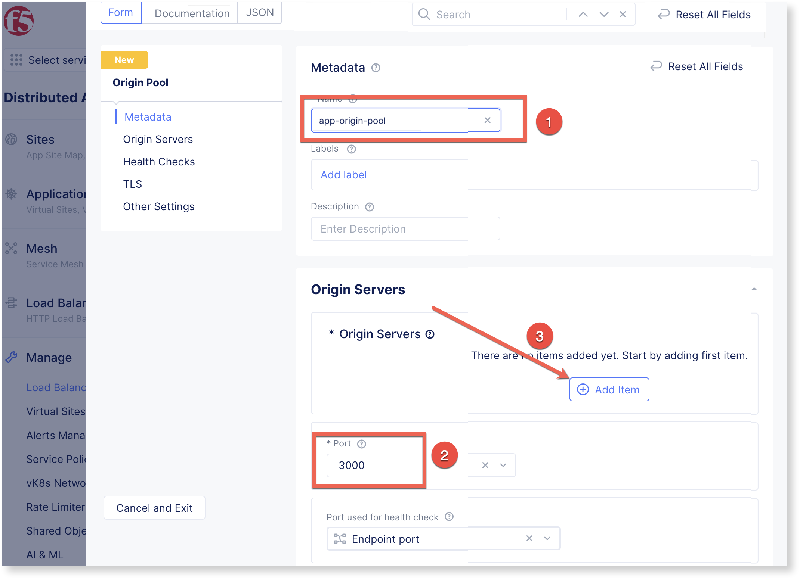
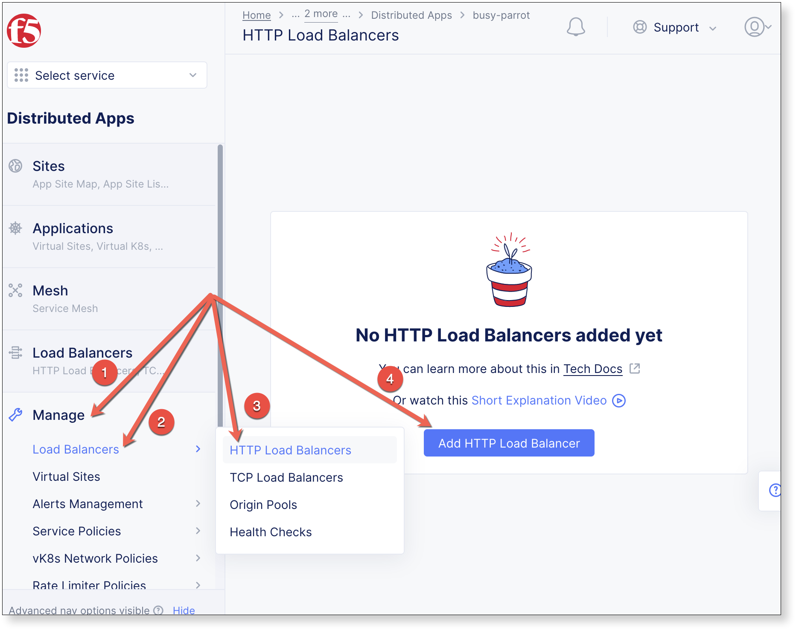
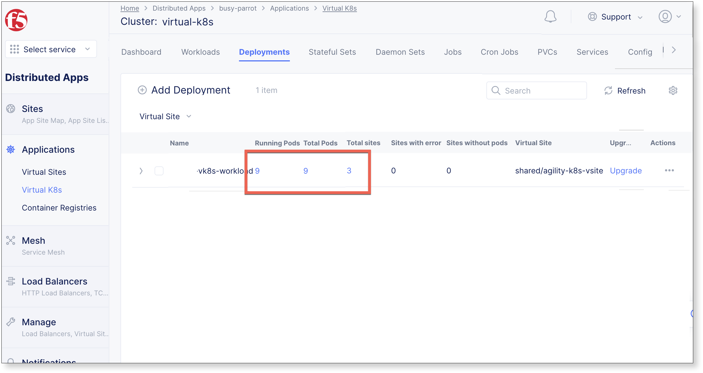
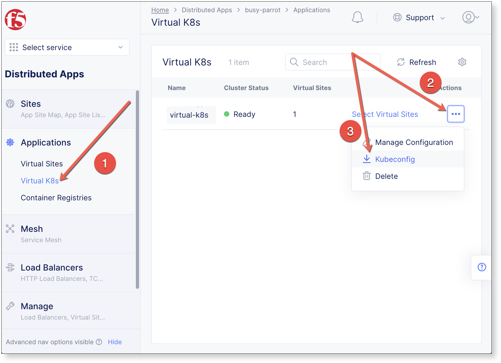

Managed Namespace
Configure a virtual k8s cluster, deploy and scale a containerized workload from a private registry.
A service with one or more containers with configurable number of replicas may be deployed on a selection of Regional Edge sites or customer sites and advertised within the cluster where is it deployed, on the Internet, or on other sites using TCP or HTTP or HTTPS load balancer.
https://github.com/richardjortega/ks8-blue-green
F5 Distributed Cloud documentation
The following topics will be covered in this lab.
Create Virtual k8s
Step 1
Click , and then click Add Virtual K8s

Name the Virtual K8s object, then under Virtual Sites click
 , select shared/agility-k8s-vsite, and click Save and Exit
, select shared/agility-k8s-vsite, and click Save and ExitWarning
Virtual K8s “
 ” may take five or more minutes to complete.
” may take five or more minutes to complete.
virtual_k8s.json
{
"metadata": {
"name": "virtual-k8s",
"namespace": "<namespace>",
"labels": {},
"annotations": {},
"disable": false
},
"spec": {
"vsite_refs": [
{
"kind": "virtual_site",
"tenant": "ves-io",
"namespace": "shared",
"name": "ves-io-all-res"
}
],
"disabled": {}
}
}
$ vesctl configuration create virtual_k8s -i virtual_k8s.json
Deploy Workload
Step 2
When Virtual K8s shows as “
 ”, click the virtual site to display details.
”, click the virtual site to display details.
Click Workloads in the properties tab, and then click Add VK8s Workload

virtual_k8s.json
{
"metadata": {
"name": "virtual-k8s",
"namespace": "<namespace>",
"labels": {},
"annotations": {},
"disable": false
},
"spec": {
"vsite_refs": [
{
"kind": "virtual_site",
"tenant": "ves-io",
"namespace": "shared",
"name": "ves-io-all-res"
}
],
"disabled": {}
}
}
$ vesctl configuration create virtual_k8s -i virtual_k8s.json
Container Service
Provide a Name, then under Select Type of Workload select Service, and click Configure.

In Containers section click
Complete the Container Configuration section by providing a Name and details for which image to use, then Add Item
Name: vk8s-container
Image Name: coleman.azurecr.io/f5xcdemoapp
Container Registry: Private Registry
Private Registry: shared/azure-registry

Associate to Virtual Site
Within the Deploy Options section, set Where to Deploy the workload to Customer Virtual Sites, then click Configure.

Select shared/agility-k8s-vsite under List of Virtual Sites to Deploy, then Apply

Service Advertisement
Within the Advertise Options section, set Options to Advertise the Workload to Advertise in Cluster, then select Configure.

Set Select Port to Advertise to 3000, select Application Protocol to HTTP, and click Apply

The Deploy Options dialogue is dismissed, and click Apply to complete the Containers dialogue.

The Containers dialogue is now dismissed, to finalize the Workload, Click Save and Exit
The workload has been added. The vsite that vk8s is deployed on consists of 3 sites, so there are 3 pods in total.

Advertise on the Internet
In order to view the kubernetes workload with a browser, create an HTTP-LB to advertise the site on the internet.
Create Origin Pool
Navigate the left-side menu to , then click Add Origin Pool.
Enter a Name, set the Port value to 3000, and under Origin Servers click
Complete the Origin Server section with the values below, click Apply, and Save and Exit on subsequent screen to complete the origin pool creation.
Select Type of Origin Server: K8s Service Name of Origin Server on given Sites
Service: Service Name
- Service Name: vk8s-workload.<namespace>
Attention
Supply the configured workload name from previous steps along with the student namespace.
Site or Virtual Site: Virtual Site
Virtual Site: shared/agility-k8s-vsite
Select Network on the site: vK8s Networks on Site

Create HTTP Load-Balancer
Navigate the left-side menu to , then click Add HTTP Load Balancer.
Add the following values, and click Save and Exit
Name: app-http-lb
Domains and LB Type: Use the assigned {namespace}.lab-app.f5demos.com
Load Balancer Type: HTTP
Automatically Manage DNS Records: Make sure this is checked
Origins: Click
, and select app-origin-pool

It may take a minute for the DNS Info to display VIRTUAL_HOST_READY

Open a browser tab and navigate to the configured DNS name http://busy-parrot.lab-app.f5demos.com/. Refresh your browser a few times and notice what happens to the country name.

Scale Deployment
Modify Virtual K8s Deployment to Scale Replicas.
Edit JSON
Navigate the left-side menu to , click Deployments, Actions, then click Edit.

Enable , and expand the
specsection by clicking

Change replicas: 1 to replicas: 3 and click Save

After a few moments, the number of Running Pods will increase to 9.

View Results with kubectl
Install kubectl
Insert instructions to install kubectl
Download kubeconfig
Navigate to , click , and then click

kubectl commands
Run the following commands and view the vk8s configuration.
View Nodes
$ kubectl get nodes
NAME STATUS ROLES AGE VERSION
agility-vpc-site-one-agility-vpc-site-one-1w2h Ready ves-master 28s v1.21.7-vesdev
agility-vpc-site-three-agility-vpc-site-three-xn79 Ready ves-master 32s v1.21.7-vesdev
agility-vpc-site-two-agility-vpc-site-two-j735 Ready ves-master 33s v1.21.7-vesdev
View pods
$ kubectl get pods
NAME READY STATUS RESTARTS AGE
vk8s-workload-574ffc5cdd-sb5bm 2/2 Running 0 2m40s
vk8s-workload-64f8f87976-kh8zz 2/2 Running 0 2m37s
vk8s-workload-67b54bd74b-bqdx8 2/2 Running 0 2m41s
$ kubectl describe pod <podname>
View deployment
$ kubectl get deployment vk8s-workload
NAME READY UP-TO-DATE AVAILABLE AGE
vk8s-workload 3/1 3 3 4m43s
View service
$ kubectl get svc vk8s-workload
NAME TYPE CLUSTER-IP EXTERNAL-IP PORT(S) AGE
vk8s-workload ClusterIP 192.168.167.169 <none> 3000/TCP 8m33s
View all resources in the namespace
$ kubectl get all
NAME READY STATUS RESTARTS AGE
pod/vk8s-workload-574ffc5cdd-sb5bm 2/2 Running 0 9m18s
pod/vk8s-workload-64f8f87976-kh8zz 2/2 Running 0 9m15s
pod/vk8s-workload-67b54bd74b-bqdx8 2/2 Running 0 9m19s
NAME TYPE CLUSTER-IP EXTERNAL-IP PORT(S) AGE
service/vk8s-workload ClusterIP 192.168.167.169 <none> 3000/TCP 9m21s
NAME READY UP-TO-DATE AVAILABLE AGE
deployment.apps/vk8s-workload 3/1 3 3 9m22s
NAME DESIRED CURRENT READY AGE
replicaset.apps/vk8s-workload-574ffc5cdd 1 1 1 9m22s
replicaset.apps/vk8s-workload-64f8f87976 1 1 1 9m22s
replicaset.apps/vk8s-workload-67b54bd74b 1 1 1 9m22s
View the output of the deployment in yaml format
$ kubectl get deployment -o yaml